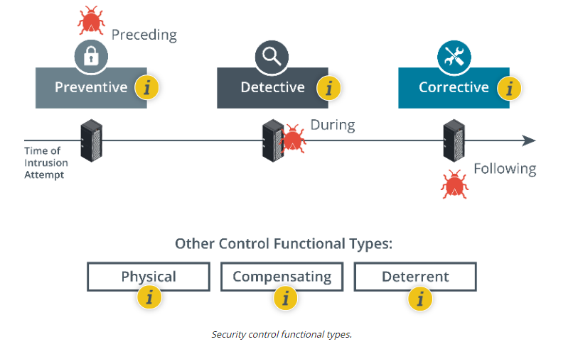

Compare and Contrast Security Control And Framework Types
Secuity Control Categories
Information and cybersecurity assurance is usually considered to take place within an overall process of business risk management. Implementation of cybersecurity functions is often the responsibility of the IT department. There are many different ways of thinking about how IT services should be governed to fulfill overall business needs. Some organizations have developed IT service frameworks to provide best practice guides to implementing IT and cybersecurity. These frameworks can shape company policies and provide checklists of procedures, activities, and technologies that should ideally be in place. Collectively, these procedures, activities, and tools can be referred to as security controls.
A security control is something designed to give a system or data asset the properties of confidentiality, integrity, availability, and non-repudiation.
Controls can be divided into three broad categories, representing the way the control is implemented:
- Technical—the control is implemented by a system (hardware, software, or firmware). For example, firewalls, antivirus software, and OS access control models are technical controls. Technical controls may also be described as logical controls.
- Operational—the control is implemented primarily by people rather than systems. For example, security guards and training programs are operational controls rather than technical controls.
- Managerial—the control gives oversight of the information system. Examples could include risk identification or a tool allowing the evaluation and selection of other security controls.

Managerial Controls
- Oversight of the security system.
- Strategic reporting and insights.
- Risk assessment.
- Security policies
Operational Controls
- Day-to-day administration of security system.
- Tactical reporting and insights.
- Controls that require people to implement or administer.
- Standard operating procedures
Technical Controls
- Controls that run on hardware or software.
- Operate without much intervention once configured.
- Examples include firewalls, anti-virus, intrusion detection, data loss prevention,...
Security Control Function Types
Security controls can also be classified in types according to the goal or function they perform:
- Preventive — the control acts to eliminate or reduce the likelihood that an attack can succeed. A preventative control operates before an attack can take place. Access control lists (ACL) configured on firewalls and file system objects are preventative-type controls. Anti-malware software also acts as a preventative control, by blocking processes identified as malicious from executing. Directives and standard operating procedures (SOPs) can be thought of as administrative versions of preventative controls.
- Detective — the control may not prevent or deter access, but it will identify and record any attempted or successful intrusion. A detective control operates during the progress of an attack. Logs provide one of the best examples of detective-type controls.
- Corrective—the control acts to eliminate or reduce the impact of an intrusion event. A corrective control is used after an attack. A good example is a backup system that can restore data that was damaged during an intrusion. Another example is a patch management system that acts to eliminate the vulnerability exploited during the attack.
While most controls can be classed functionally as preventative, detective, or corrective, a few other types can be used to define other cases:
- Physical—controls such as alarms, gateways, locks, lighting, security cameras, and guards that deter and detect access to premises and hardware are often classed separately.
- Deterrent—the control may not physically or logically prevent access, but psychologically discourages an attacker from attempting an intrusion. This could include signs and warnings of legal penalties against trespass or intrusion.
- Compensating—the control serves as a substitute for a principal control, as recommended by a security standard, and affords the same (or better) level of protection but uses a different methodology or technology.

Preventive Controls (Preceding)
- Reduce likelihood of attack
- Operate before/preceding an attack
- Examples include firewalls, anti-virus, encryption, ...
Detective Controls (During)
- Identify or log signs of attack
- Operate during an attack
- Examples include intrusion detection, log review, physical inspections, ...
Corrective Controls (Following)
- Reduce or eliminate impact of attack
- Operate after/following an attack
- Examples include backup, patch management, lessons learned, ...
Other Control Functional Types
Physical Controls
- Separate type for premises security systems
- Can be preventative, detective, or corrective
- Examples include alarms, gateways, locks, lighting, security cameras, and guards, ...
Compensating Controls
- Substitute for a primary control that is a compliance requirement that cannot be implemented as such
- Affords the same (or better) level of protection but uses a different methodology or technology
Deterrent Controls
- Reduce likelihood of attack by discouraging potential threat actors
- Examples include signage, legal/civil penalties, etc..
NIST CYBERSECURITY FRAMEWORK
A cybersecurity framework (CSF) is a list of activities and objectives undertaken to mitigate risks. The use of a framework allows an organization to make an objective statement of its current cybersecurity capabilities, identify a target level of capability, and prioritize investments to achieve that target. This is valuable for giving a structure to internal risk management procedures and provides an externally verifiable statement of regulatory compliance. Frameworks are also important because they save an organization from building its security program in a vacuum, or from building the program on a foundation that fails to account for important security concepts.
There are many different frameworks, each of which categorize cybersecurity activities and controls in slightly different ways. These frameworks are non-regulatory in the sense that they do not attempt to address the specific regulations of a specific industry but represent "best practice" in IT security governance generally. Most organizations will have historically chosen a particular framework; some may use multiple frameworks in conjunction.
Most frameworks are developed for an international audience; others are focused on a domestic national audience. Most of the frameworks are associated with certification programs to show that staff and consultants can apply the methodologies successfully.
The National Institute of Standards and Technology (NIST) Cybersecurity Framework (CSF) is a relatively new addition to the IT governance space and distinct from other frameworks by focusing exclusively on IT security, rather than IT service provisioning more generally (nist.gov/cyberframework). It is developed for a US audience and focuses somewhat on US government, but its recommendations can be adapted for other countries and types of organizations.
NIST's Risk Management Framework (RMF) pre-dates the CSF. Where the CSF focuses on practical cybersecurity for businesses, the RMF is more prescriptive and principally intended for use by federal agencies (csrc.nist.gov/projects/risk-management/rmf-overview).
As well as its cybersecurity and risk frameworks, NIST is responsible for issuing the Federal Information Processing Standards (FIPS) plus advisory guides called Special Publications (csrc.nist.gov/publications/sp). Many of the standards and technologies covered in CompTIA Security+ are discussed in these documents.
ISO AND CLOUD FRAMEWORKS
International Organization for Standardization (ISO) 27K
The International Organization for Standardization (ISO) has produced a cybersecurity framework in conjunction with the International Electrotechnical Commission (IEC). The framework was established in 2005 and revised in 2013. Unlike the NIST framework, the ISO 27001 Information Security Management standard must be purchased (https://www.iso.org/standard/27001). ISO 27001 is part of an overall 27000 series of information security standards, also known as 27K. Of these, 27002 classifies security controls, 27017 and 27018 reference cloud security, and 27701 focuses on personal data and privacy.
ISO 31K
Where ISO 27K is a cybersecurity framework, ISO 31K (iso.org/iso-31000-risk-management.html) is an overall framework for enterprise risk management (ERM). ERM considers risks and opportunities beyond cybersecurity by including financial, customer service, competition, and legal liability factors. ISO 31K establishes best practices for performing risk assessments.
Cloud Security Alliance
The not-for-profit organization Cloud Security Alliance (CSA) produces various resources to assist cloud service providers (CSP) in setting up and delivering secure cloud platforms. These resources can also be useful for cloud consumers in evaluating and selecting cloud services.
- Security Guidance (cloudsecurityalliance.org/research/guidance)—a best practice summary analyzing the unique challenges of cloud environments and how on-premises controls can be adapted to them.
- Enterprise reference architecture (ea.cloudsecurityalliance.org)—best practice methodology and tools for CSPs to use in architecting cloud solutions. The solutions are divided across a number of domains, such as risk management and infrastructure, application, and presentation services.
- Cloud controls matrix (cloudsecurityalliance.org/research/working-groups/cloud-controls-matrix)—lists specific controls and assessment guidelines that should be implemented by CSPs. For cloud consumers, the matrix acts as a starting point for cloud contracts and agreements as it provides a baseline level of security competency that the CSP should meet.
Statements on Standards for Attestation Engagements (SSAE) Service Organization Control (SOC)
The Statements on Standards for Attestation Engagements (SSAE) are audit specifications developed by the American Institute of Certified Public Accountants (AICPA). These audits are designed to assure consumers that service providers—notably cloud providers, but including any type of hosted or third-party service—meet professional standards (aicpa.org/interestareas/frc/assuranceadvisoryservices/serviceorganization-smanagement.html). Within SSAE No. 18 (the current specification), there are several levels of reporting:
- Service Organization Control (SOC2)—evaluates the internal controls implemented by the service provider to ensure compliance with Trust Services Criteria (TSC) when storing and processing customer data. TSC refers to security, confidentiality, integrity, availability, and privacy properties. A SOC2 Type I report assesses the system design, while a Type II report assesses the ongoing effectiveness of the security architecture over a period of 6-12 months. SOC2 reports are highly detailed and designed to be restricted. They should only be shared with the auditor and regulators, and with important partners under non-disclosure agreement (NDA) terms.
- SOC3—a less detailed report certifying compliance with SOC2. SOC3 reports can be freely distributed.
BENCHMARKS AND SECURE CONFIGURATION GUIDES
Although a framework gives a "high-level" view of how to plan IT services, it does not generally provide detailed implementation guidance. At a system level, the deployment of servers and applications is covered by benchmarks and secure configuration guides.
Center for Internet Security (CIS)
The Center for Internet Security (cisecurity.org) is a not-for-profit organization (founded partly by The SANS Institute). It publishes the well-known "The CIS Critical Security Controls." The CIS-RAM (Risk Assessment Method) can be used to perform an overall evaluation of security posture (learn.cisecurity.org/cis-ram).
CIS also produces benchmarks for different aspects of cybersecurity. For example, there are benchmarks for compliance with IT frameworks and compliance programs, such as PCI DSS, NIST 800-53, SOX, and ISO 27000. There are also product-focused benchmarks, such as for Windows Desktop, Windows Server, macOS, Linux, Cisco, web browsers, web servers, database and email servers, and VMware ESXi. The CIS-CAT (Configuration Access Tool) can be used with automated vulnerability scanners to test compliance against these benchmarks (cisecurity.org/cybersecurity-tools/cis-cat-pro/cis-cat-faq).
OS/Network Appliance Platform/Vendor-specific Guides
Operating system (OS) best practice configuration lists the settings and controls that should be applied for a computing platform to work in a defined role, such as client workstation, authentication server, network switch/router/firewall, web/application server, and so on.
Most vendors will provide guides, templates, and tools for configuring and validating the deployment of network appliances, operating systems, web servers, and application/database servers. The security configurations for each of these devices will vary not only by vendor but by device and version as well. The vendor's support portal will host the configuration guides (along with setup/install guides and software downloads and updates) or they can be easily located using a web search engine.
There is also detailed guidance available from several organizations to cover both vendor-neutral deployments and to provide third-party assessment and advice on deploying vendor products. Apart from the CIS controls, some notable sources include:
- Department of Defense Cyber Exchange provides Security Technical Implementation Guides (STIGs) with hardening guidelines for a variety of software and hardware solutions (public.cyber.mil).
- National Checklist Program (NCP) by NIST provides checklists and benchmarks for a variety of operating systems and applications (nvd.nist.gov/ncp/repository).
Application Servers
Most application architectures use a client/server model. This means that part of the application is a client software program, installed and run on separate hardware to the server application code. The client interacts with the server over a network. Attacks can therefore be directed at the local client code, at the server application, or at the network channel between them. As well as coding issues, the applications need to take account of platform issues. The client application might be running in a computing host alongside other, potentially malicious, software. Code that runs on the client should not be trusted. The server-side code should implement routines to verify that input conforms to what is expected.
Web Server Applications
A web application is a particular type of client/server architecture. A web application leverages existing technologies to simplify development. The application uses a generic client (a web browser), and standard network protocols and servers (HTTP/HTTPS). The specific features of the application are developed using code running on the clients and servers. Web applications are also likely to use a multi-tier architecture, where the server part is split between application logic and data storage and retrieval. Modern web applications may use even more distributed architectures, such as microservices and serverless.
The Open Web Application Security Project (OWASP) is a not-for-profit, online community that publishes several secure application development resources, such as the Top 10 list of the most critical application security risks (owasp.org/www-project-top-ten). OWASP has also developed resources, such as the Zed Attack Proxy and Juice Shop (a deliberately unsecure web application), to help investigate and understand penetration testing and application security issues.
REGULATIONS, STANDARDS, AND LEGISLATION
The key frameworks, benchmarks, and configuration guides may be used to demonstrate compliance with a country's legal/regulatory requirements or with industry-specific regulations. Due diligence is a legal term meaning that responsible persons have not been negligent in discharging their duties. Negligence may create criminal and civil liabilities. Many countries have enacted legislation that criminalizes negligence in information management. In the US, for example, the Sarbanes-Oxley Act (SOX) mandates the implementation of risk assessments, internal controls, and audit procedures. The Computer Security Act (1987) requires federal agencies to develop security policies for computer systems that process confidential information. In 2002, the Federal Information Security Management Act (FISMA) was introduced to govern the security of data processed by federal government agencies.
Some regulations have specific cybersecurity control requirements; others simply mandate "best practice," as represented by a particular industry or international framework. It may be necessary to perform mapping between different industry frameworks, such as NIST and ISO 27K, if a regulator specifies the use of one but not another. Conversely, the use of frameworks may not be mandated as such, but auditors are likely to expect them to be in place as a demonstration of a strong and competent security program.
Personal Data and the General Data Protection Regulation (GDPR)
Where some types of legislation address cybersecurity due diligence, others focus in whole or in part on information security as it affects privacy or personal data. Privacy is a distinct concept from security. Privacy requires that collection and processing of personal information be both secure and fair. Fairness and the right to privacy, as enacted by regulations such as the European Union's General Data Protection Regulation (GDPR), means that personal data cannot be collected, processed, or retained without the individual's informed consent, unless there are other overriding considerations, such as public interest or other legal obligations. Informed consent means that the data must be collected and processed only for the stated purpose, and that purpose must be clearly described to the user in plain language, not legalese. GDPR (ico.org.uk/for-organisations/guide-to-data-protection/guide-to-the-general-data-protection-regulation-gdpr) gives data subjects rights to withdraw consent, and to inspect, amend, or erase data held about them.
National, Territory, or State Laws
Compliance issues are complicated by the fact that laws derive from different sources. For example, the GDPR does not apply to American data subjects, but it does apply to American companies that collect or process the personal data of people in EU countries. In the US, there are national federal laws, state laws, plus a body of law applying to US territories (Puerto Rico, the US Virgin Islands, Guam, and American Samoa). Federal laws tend to focus either on regulations like FISMA for federal departments or as "vertical" laws affecting a particular industry. Examples of the latter include the Gramm–Leach–Bliley Act (GLBA) for financial services, and the Health Insurance Portability and Accountability Act (HIPAA).
Some states have started to introduce "horizontal" personal data regulations, similar to the approach taken by the GDPR. One high-profile example of state legislation is the California Consumer Privacy Act (CCPA) (csoonline.com/article/3292578/california-consumer-privacy-act-what-you-need-to-know-to-be-compliant.html).
Industry Mandated Regulations
Compliance issues can also arise from industry-mandated regulations. For example, the Payment Card Industry Data Security Standard (PCI DSS) defines the safe handling and storage of financial information (pcisecuritystandards.org/pci_security).